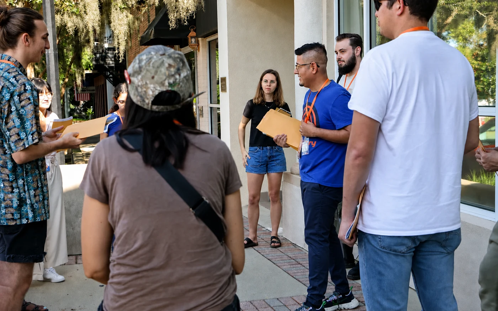

Worker centers and alternative labor institutions
How do organizations support workers excluded from traditional labor protections while building leadership, participation, and collective action?
I study how worker centers and community organizations help immigrant, low-wage, and undocumented workers build voice, leadership, and collective capacity. This page connects the questions, archives, methods, and public-facing work behind that research.
My work brings labor studies, migration scholarship, oral history, and political economy into one account of how people create power under unequal conditions.
How do organizations support workers excluded from traditional labor protections while building leadership, participation, and collective action?
How do cities, nonprofits, and informal institutions mediate exclusionary policy and shape migrant workers’ everyday experiences?
How can community memory challenge official accounts while treating narrators as historical agents rather than sources to be extracted?
What forms of participation and belonging become possible when workers create their own institutions, media, and relationships?
The Working Press and The Workers’ Edge show how workers and community organizations explained workplace struggles, connected campaigns, and created a public language of solidarity.


These selected moments show the listening, training, public service, and accountability behind the scholarship. They are thematic rather than a chronological news feed.

As Assistant Director of the Samuel Proctor Oral History Program, I helped lead week-long field programs in the Mississippi Delta. We prepared students to understand the places we entered, listen with humility, and recognize community members as experts on their own lives.
Approach: arrive prepared, listen carefully, and remain accountable after the interview ends.
Visiting sites connected to Emmett Till helped us understand how memory lives in the landscape—and why confronting racial violence requires listening to the people who continue to carry that history.

The Cornell–Queen Mary program pushed me to connect migrant labor and displacement to borders, urban governance, and the institutional production of exclusion.

I documented one small part of a wider public struggle: immigrant workers, families, and allies standing together for dignity and belonging.

Working with Ana Ortiz, No Más Lágrimas, and local partners reinforced that useful knowledge must also be accessible. Multilingual know-your-rights materials are one way it can move back into the community.

I joined a community food giveaway in Ithaca as part of fieldwork and community service. The experience offered a grounded view of how local people meet immediate needs while sustaining relationships across the community.

At UT Austin’s Urban Ethnography Lab, I sharpened how I observe interaction, conduct interviews, analyze qualitative data, and document ethical decisions.
A note on representation: I share these photographs as records of work done in relationship with others. Captions identify my role while recognizing that the labor, histories, and experiences pictured belong to the communities themselves.
The site now separates enduring research questions from dated professional updates and formal scholarly outputs.